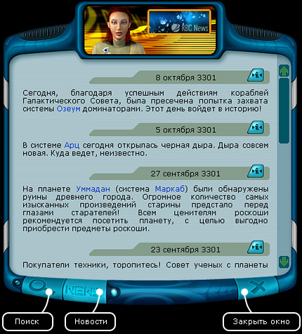
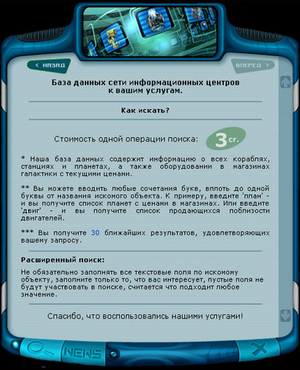
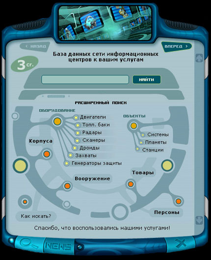
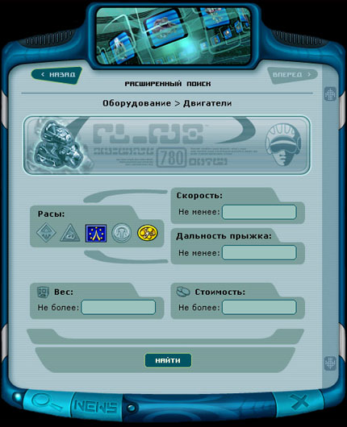
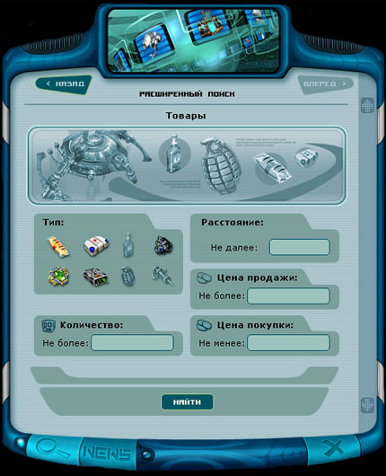
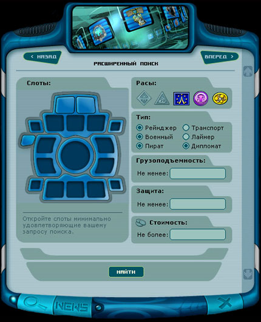
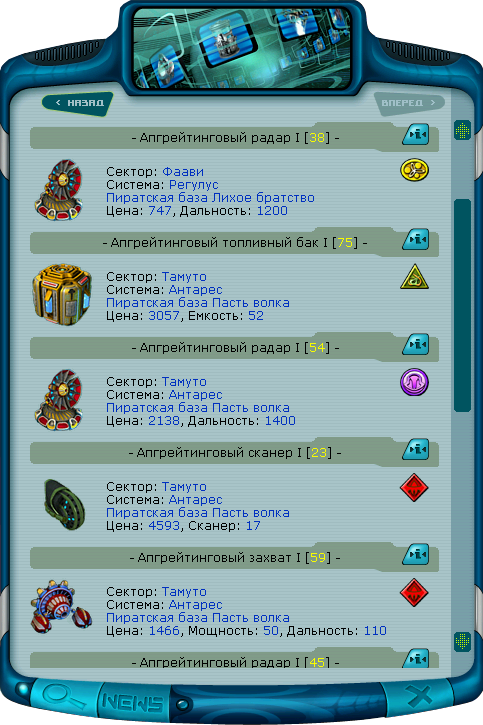

Руководство рейнджера > Экран
планеты > Информационный центр (I)
|
Руководство рейнджера > Экран
планеты > Информационный центр (I)
|
| Информационный центр (I) В информационном центре публикуются самые последние галактические новости. Регулярно читая их, вы можете быть в курсе деловой, политической, военной и научной жизни коалиции, что важно для успешной игры. Из новостей можно узнать об освобождении звездных систем от доминаторов, о резком снижении цен на товары, о появлении в определенных системах известных пиратов или торговцев, об открытии черных дыр, а также много другой полезной информации. |

| Совет. Для того чтобы запомнить интересную
вам новость, щелкните по значку |
| Чтобы переключиться в режим поиска: • Нажмите на кнопку "Лупа" в левой нижней части окна или нажатием клавиши I.  Чтобы осуществить простой поиск: 1. Введите часть имени/названия искомого объекта в строку поиска. Примеры строк для поиска: "а", "земля", "лякуша", "радар". 2. Нажмите кнопку "Найти". В информационном центре можно переключиться в режим расширенного поиска и узнать местоположение любого значимого объекта, будь то корабль, планета, космическая станция или крутое оборудование в магазине. Благодаря этой информации можно выполнять такие сложные задания, как розыск и уничтожение злостных пиратов.  Чтобы осуществить расширенный поиск: 1. Выберите необходимое направление поиска: оборудование (по видам), корпуса, оружие, товары, системы, планеты, станции или персоны. Выбор конкретного направления поиска производится нажатием на соответствующую оранжевую кнопку. 2. Определите параметры поиска (выберите необходимую расу производителя, ценовые рамки товаров/оборудования, характеристики вооружения и т.д.) .Заполните поисковые поля требуемыми значениями. Чем больше полей будет заполнено, тем уже будет круг поиска объектов. 3. Нажмите кнопку "Найти".  Примечание. Не обязательно заполнять все текстовые поля по искомому объекту, заполните только то, что вас интересует, пустые поля не будут участвовать в поиске, считается, что подходит любое значение.  Информационный центр предоставляет расширенные возможности по поиску корпусов кораблей. Можно производить поиск сразу по 6 характеристикам: • слоты оборудования (можно на рисунке корабля указать, какие слоты обязательно должны быть открытыми, кликнув курсором); • раса производителя; • тип (рейнджерский, пиратский торговый и т.п.); • грузоподъемность; • защита; • цена.  Примечание. Поиск не чувствителен к регистру вводимых букв, т.е. строки "АльФа" и "альфа" считаются одинаковыми. Стоимость одной операции поиска - 3 cr. В результате успешного поиска вы получите 30 ближайших результатов, отвечающих вашему запросу.  Для того, чтобы запомнить интересующие вас результаты поиска и местонахождения нужных объектов поиска, щелкните по значку Чтобы вернуться в режим новостей: • Нажмите на кнопку "NEWS" в нижней части окна. |